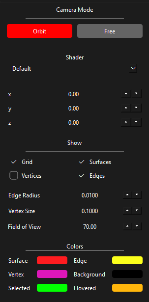
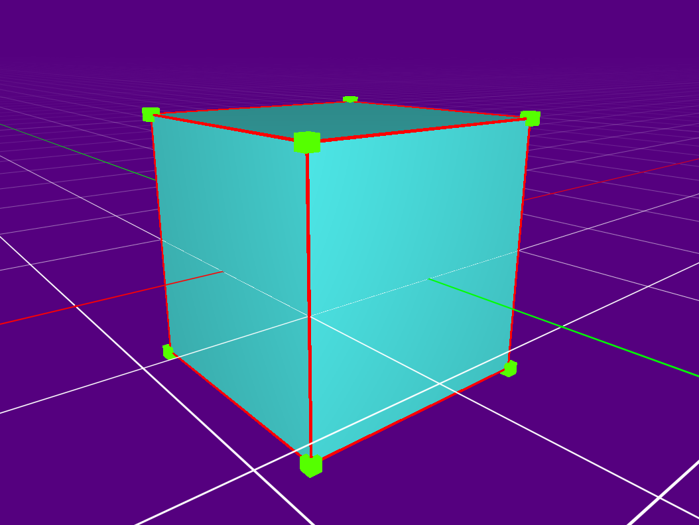
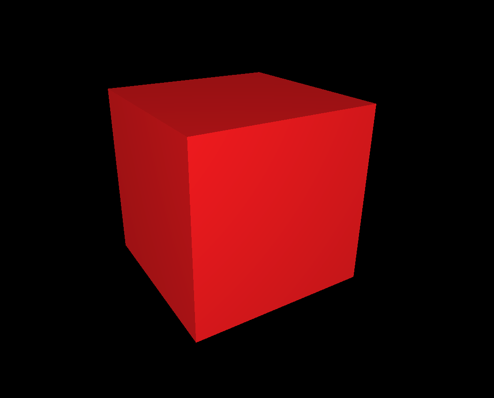
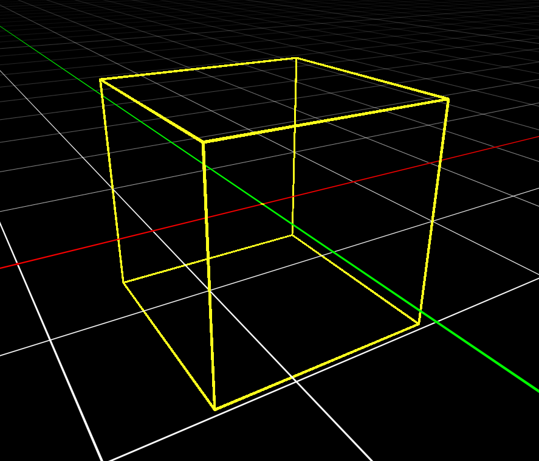
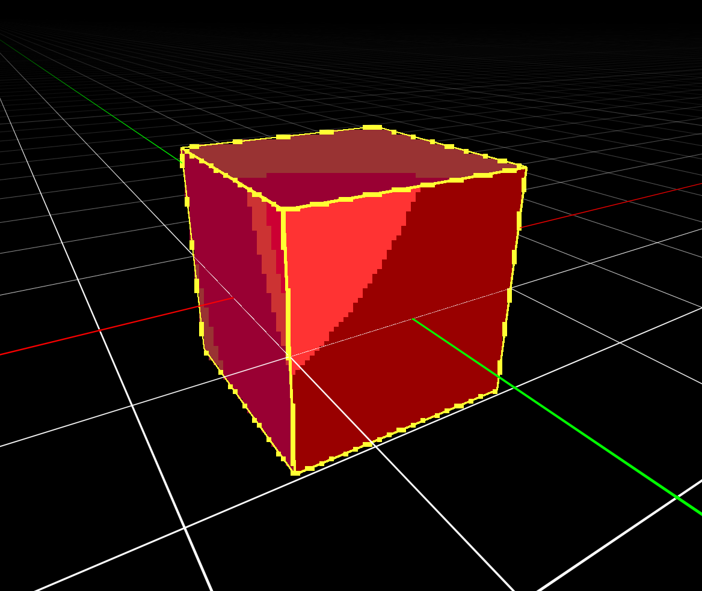

Settings
Camera Mode
There are two camera modes in ABC3D: orbit and free. Orbit restricts the camera to rotate around the orbit point. You may select an orbit point by right clicking on an element and selecting "Orbit". Free mode allows the user to move the camera freely around the scene.
Camera Settings
Contained in the camera tool properies panel are a number of visual settings.

These settings are primarily based on preference. Here the user can customize what is visible, the colors of elements, and the shader type.
| Setting | Example |
|---|---|
| Colors |  |
| No Grid, No Wireframe |  |
| Wireframe |  |
| Stylized Shader |  |